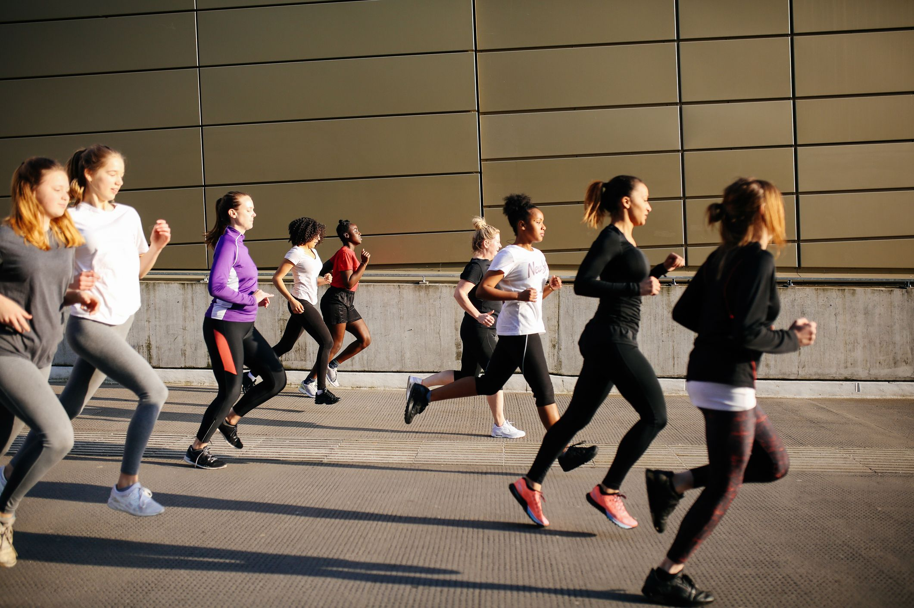

About Us
Welcome to Women's Running Club! Our club was founded in 2021 with the mission of empowering women of all ages and fitness levels to achieve their running goals in a supportive and inclusive community. Whether you're a beginner just starting out, an experienced runner looking for training partners, or somewhere in between, we welcome you to join us. We offer regular group runs, training programs, social events, and opportunities to participate in local races. Our team of experienced coaches and dedicated volunteers are here to help you achieve your running goals and make lasting friendships along the way. 